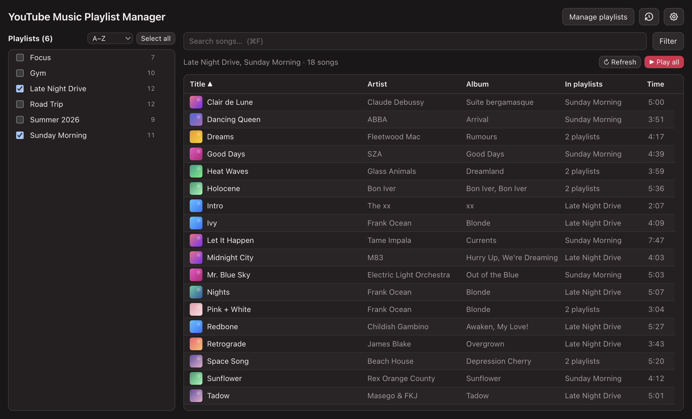

YouTube Music Playlist Manager
Organize, clean up, and combine your YouTube Music playlists.
Download for Mac
What it does
- One list See songs from several playlists together, each song once.
- Find overlaps Filter to songs they share, or songs repeated in a playlist.
- Edit safely Add, remove, or clear out repeats, with an undo.
- Quick play Send any selection to YouTube Music as a queue.